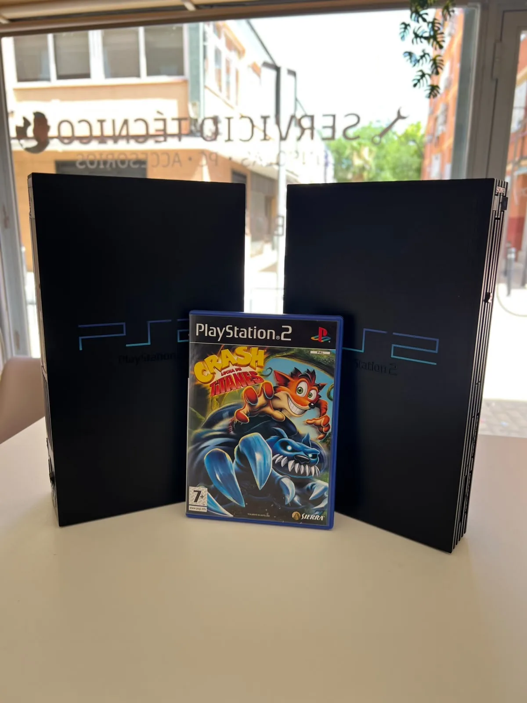

CONTACTO / 04
CUÉNTANOS
DÓNDE ESTÁ
EL FALLO.
Modelo, síntomas y cuándo comenzó. Con eso podemos empezar a ayudarte.

GETAFE
COMUNIDAD DE MADRID
COMUNIDAD DE MADRID
PREPARA TU CONSULTA
3 DATOS.
1 BUEN COMIENZO.
- 01MODELOPS5, Xbox Series S, Switch OLED…
- 02SÍNTOMASNo enciende, no da imagen, se calienta…
- 03HISTORIALGolpe, líquido o reparación anterior.
VISITA EL TALLER
ANTES DE VENIR,
ESCRÍBENOS.
Confirmaremos la recepción del equipo y te daremos las indicaciones necesarias.
CONFIRMAR VISITA ↗DUDAS RÁPIDAS
TODO
CLARO.
¿PUEDO IR SIN CITA?+
Te recomendamos contactar antes para confirmar la recepción.
¿QUÉ DEBO LLEVAR?+
La consola y los accesorios necesarios para reproducir el fallo.
¿ME INFORMÁIS ANTES DE REPARAR?+
Sí, conocerás la solución antes de autorizar el trabajo.